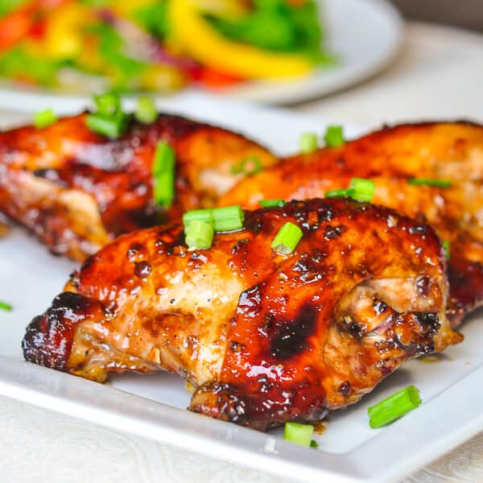

Harissa Honey Chicken

Description
These harissa honey chicken thighs are a spicy-sweet delight, rubbed in harissa paste and honey, then baked to perfection. Adjust the amount of harissa paste to suit your spice preference.
Prep Time:
15 mins
Cook Time:35 mins
Servings:4
Ingredients
- 4 large skin-on, bone-in chicken thighs
- 3 tablespoons harissa paste
- 2 tablespoons honey
- 2 tablespoons olive oil
- 2 cloves garlic, minced
- 1/2 teaspoon ground cumin
- 1/2 teaspoon ground coriander
- 1/2 teaspoon salt
Steps
- Preheat the oven to 375 degrees F (190 degrees C).
- Stir harissa paste, honey, olive oil, minced garlic, cumin, coriander, salt, and pepper together in a bowl. Rub the mixture over each chicken thigh and under the skin, ensuring each thigh is coated evenly. Place chicken thighs skin-side up in a baking dish.
- Bake in the preheated oven until the chicken is cooked through and the skin is browned and caramelized, 35 to 40 minutes. An instant-read thermometer inserted into thickest part of thigh, near the bone, should read 165 degrees F (74 degrees C). Garnish with green onions.